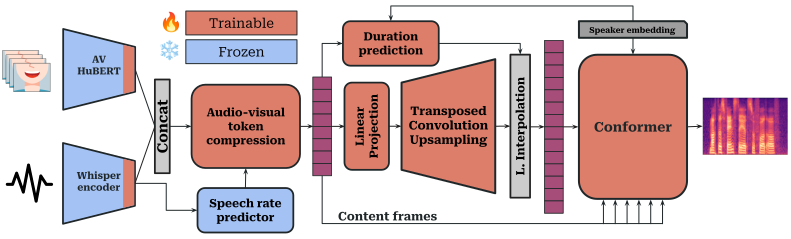

1Signal Processing and Speech Communication Laboratory, Graz University of Technology
2Department of Otorhinolaryngology, Div. Phoniatrics-Logopedics, Medical University of Vienna
3Comprehensive Centre for AI in Medicine, Medical University of Vienna
Pathological speech can be unintelligible, harsh and erratic, however lip and mouth movement remain largely intact, offering cues that can support speech rehabilitation.

| Inference mode | SIM ↑ | DNSMOS ↑ | UTMOS ↑ | WER (corpus) ↓ | CER (corpus) ↓ |
|---|---|---|---|---|---|
| AV · dur-pred | 0.703 ± 0.170 | 2.825 ± 0.389 | 3.244 ± 0.337 | 0.121 | 0.060 |
| AV · teach-forc | 0.661 ± 0.170 | 2.669 ± 0.456 | 2.404 ± 0.512 | 0.551 | 0.374 |
| AO · dur-pred | 0.691 ± 0.176 | 2.792 ± 0.386 | 3.193 ± 0.373 | 0.182 | 0.096 |
| AO · teach-forc | 0.647 ± 0.176 | 2.627 ± 0.462 | 2.365 ± 0.540 | 0.807 | 0.548 |
Random samples from the test split, for different pathological conditions and 5 different targets.
| Pathological audio | Ground truth | Audio-visual duration prediction |
Audio-visual teacher forcing |
Audio-only duration prediction |
Audio-only teacher forcing |
|---|